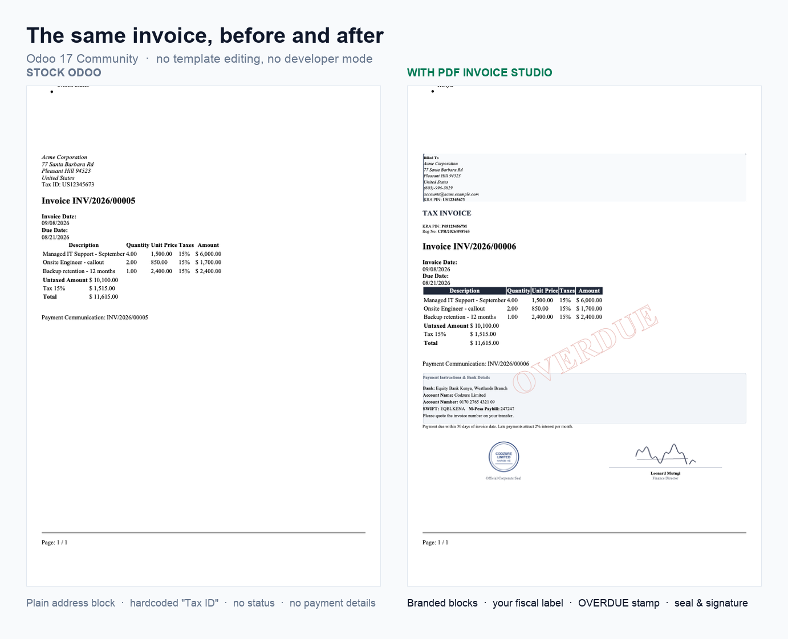
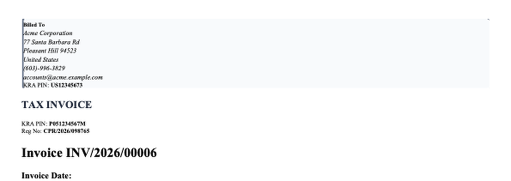
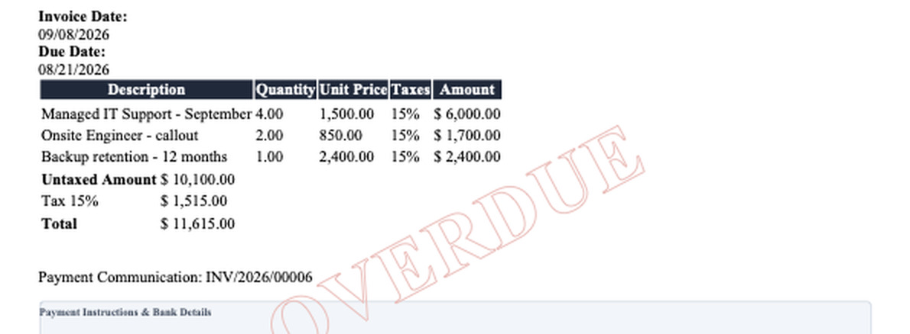
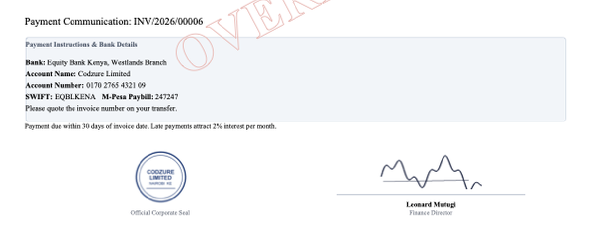

Print a PAID, OVERDUE or DRAFT watermark on the invoice PDF, add a company stamp and authorised signature, and stop Odoo printing the same address twice.
Odoo 17.0 · Community & Enterprise · No developer mode, no QWeb editing
Both pages below are real PDFs from the same Odoo 17 database and the same invoice. The only difference is that the module is installed on the right.

A diagonal PAID, PARTIALLY PAID, OVERDUE, DRAFT, CANCELLED or REVERSED stamp, driven by the invoice's own payment status. Standard Odoo has no watermark, so payment status is only readable from the payment table at the foot of the page. Choose the colour, the strength, and which statuses are stamped. The stamp prints as a hollow outline so the amounts underneath stay readable.
Upload an official company seal and a signature image, with the signatory's name and job title printed beneath. Expected on invoices in many jurisdictions, and not a field standard Odoo provides.
When the delivery address simply repeats the invoice address, Odoo prints it twice. This hides the duplicate and widens the remaining block so there is no empty gap. Choose always show, hide when it matches, or never show — the last suits digital and service businesses with nothing to ship.
Odoo prints a fixed “Tax ID” label. Print KRA PIN, GSTIN, VAT No, TIN or whatever your tax authority uses, on both your company and your customer. Add your company registration number to the header and set the document heading to TAX INVOICE or your own wording.
A formatted panel below the totals for bank account details, IBAN, SWIFT, mobile money paybill numbers or any transfer instructions, plus a footer note for your payment terms.
Document heading, tax label and branded invoice address block

Status watermark, printed so the figures stay readable

Bank details, company seal and authorised signature

Every setting is stored on the company record, so multi-company databases keep separate branding per company. Nothing is written to the invoice itself, so changing a setting takes effect on the next print.
Also known as
Invoice watermark Odoo, PAID stamp on invoice PDF, invoice paid watermark, overdue invoice stamp, draft invoice watermark, cancelled invoice watermark, payment status on invoice, invoice stamp and signature, company stamp on invoice, authorised signatory on invoice, digital signature on invoice PDF, invoice seal, custom invoice report, branded invoice Odoo, invoice layout customisation, tax invoice template, VAT number on invoice, KRA PIN on invoice, GSTIN on invoice, TIN on invoice, company registration number on invoice, bank details on invoice, payment instructions on invoice, IBAN SWIFT on invoice, mobile money paybill on invoice, hide duplicate shipping address, delivery address same as invoice address, invoice PDF customisation, accounting invoicing report.
Codzure Solutions
Support requests and feature ideas: codzuresolutions@gmail.com